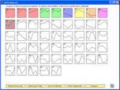
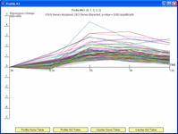
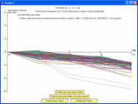
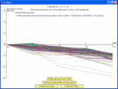
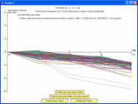
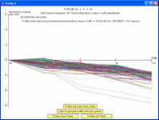

Short Time-series Expression
Miner (STEM)


 

The Short Time-series Expression Miner (STEM) is a Java program for
clustering, comparing, and visualizing short time series gene
expression data from microarray experiments
(~8 time points or fewer). STEM allows
researchers to identify significant temporal expression profiles and the
genes associated
with these profiles and to compare the behavior of these genes across
multiple conditions.
STEM is fully integrated with the
Gene Ontology (GO)
database supporting GO category
gene enrichment analyses for sets of genes having the same temporal
expression pattern. STEM also supports the ability to easily determine
and visualize the behavior of genes belonging to a given GO category
or user defined gene set,
identifying which
temporal expression profiles were enriched for these genes. (Note:
While
STEM is designed primarily to analyze data from short time course
experiments it
can be used to analyze data from
any small set of experiments which can naturally be ordered sequentially
including dose
response experiments.)
The Short Time-series Expression Miner (STEM)
version 1.3.13 (version log)
is freely available under a GPL v3.0 license.
Click here to download STEM.
STEM requires Java
1.4 or later to also be
installed.
The user manual for STEM can be found here.
The STEM software is described in:
J. Ernst,
Z. Bar-Joseph.
STEM: a tool for the analysis of short time series gene expression
data.
BMC Bioinformatics, 7:191, 2006.
STEM implements the clustering algorithm described in:
J. Ernst,
G.J. Nau, and
Z. Bar-Joseph.
Clustering Short Time Series Gene Expression Data.
Bioinformatics (Proceedings of ISMB
2005), 21 Suppl. 1, pp. i159-i168, 2005. Supporting website.
Examples of published papers using STEM as part of the data analysis
can be found here.
A short video showing screenshots of STEM can be found here
(AVI, no audio, 15M).
Screenshots of
the software with explanations are available here.
The ability of STEM to compare data sets from different experimental
conditions is described with screenshots here
and new options from version 1.2 can be found here.
Related software, the Dynamic Regulatory Events Miner (DREM),
for modeling gene regulation dynamics can be found here.
Sign-up here for a google group mailing list to receive announcements of new versions of STEM and DREM
(previous registrations have not been transferred to this list).
Email any questions or comments about STEM to
Jason Ernst (jason.ernst at ucla dot edu).
Click here for answers to frequently asked
questions.
Source code is available on GitHub here.
Individuals contributing to the development of STEM are: Jason Ernst,
Dima Patek, and Ziv Bar-Joseph
The interface of
STEM makes use of the open source software Piccolo and
Batik. The Piccolo
and Batik libraries that STEM uses are included with the STEM download.
Funding for STEM was supported in part by NIH grant NO1 AI-5001
and NSF CAREER award 0448453 to ZBJ
 
